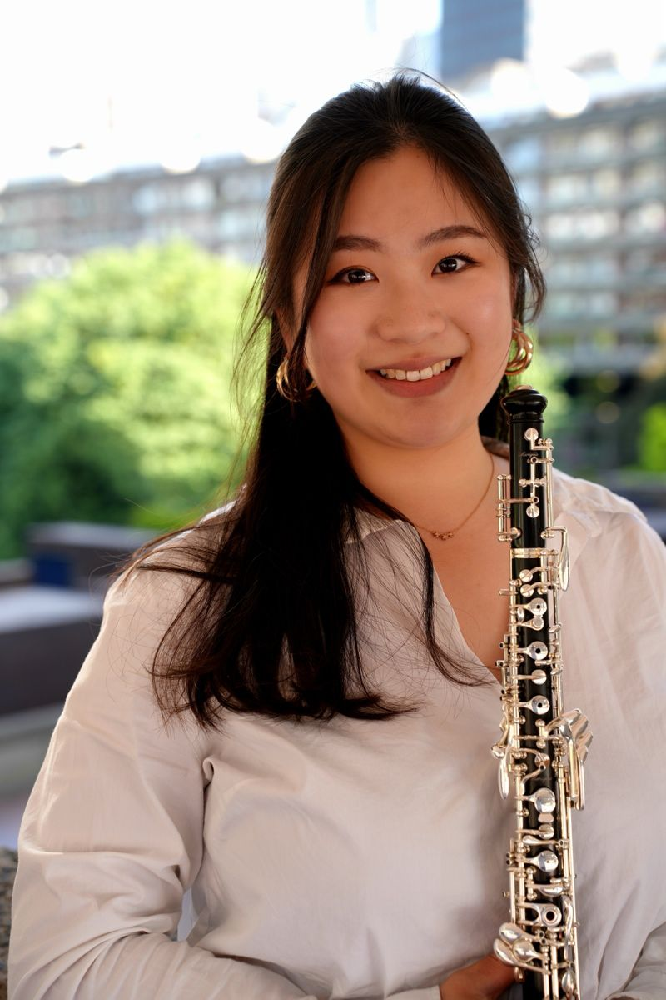
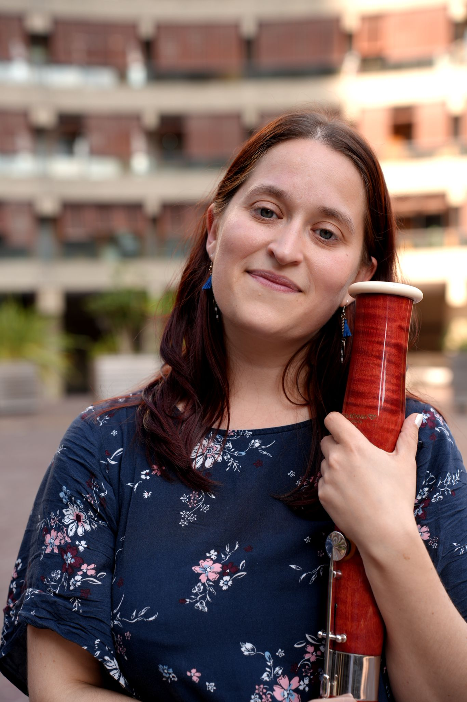

Charis Lai
Charis Lai is a London-based oboist and cor anglais player originally from Hong Kong.She is passionate about music as a universal language that connects people across cultures and backgrounds.
Charis graduated with distinction from the Guildhall School of Music & Drama, completing both her undergraduate degree and the Orchestral Artistry Master of Performance programme, where she studied with Alison Teale, Gordon Hunt, and Steven Hudson. She was a Junior Fellow at Guildhall and a member of the Orpheus Sinfonia Foundation Programme (2024-2025) and the CATIL Wind Quintet. She is also the founder of the Reed’iculous Two, partnering with Thaïs Bordes.
A versatile and experienced soloist, chamber, and orchestral musician, Charis performs regularly on both oboe and cor anglais. She has held trial positions as Principal Cor Anglais with the BBC Symphony Orchestra, BBC Philharmonic Orchestra, and BBC National Orchestra of Wales. Her freelance engagements include performances with the Philharmonia Orchestra, Oxford Philharmonic Orchestra, Thames Sinfonia, and Sinfonia Smith Square.
Charis is the recipient of the Guildhall Cor Anglais and oboe Prize (2022 & 2023) respectively and has participated in a range of prestigious festivals and courses. These include the British Isles Music Festival (2019), the Chipping Campden Music Festival (2023), and the Taipei Music Academy and Festival (2024 and 2025). She was also selected to join the Asian Youth Orchestra Festival in 2020.
Currrently, Charis teaches as an oboe tutor in Guildhall Young Artist. Charis has also taught in West London free School, London Youth Conservatoire and Music In Office as oboe and piano teacher. During her time with the Musicians' Company (2022-2027), she has held a 6-weeks workshop in 2024 with an amazing partner to introduce music and create music with the students in Moreland Primary School, then the Batten Disease Project in Richard Cloudesley in 2025. She has represented Guildhall to do workshops, masterclasses, and chamber coachings in Norwich Music Centre and Norfolk Centre for Young Musician.
Charis loves crocheting, cooking and reed-making with Netflix in her free time!

Thaïs Bordes
Originally from Toulouse in France, Thaïs began her musical journey with flute, piano, and singing in La Maîtrise du Conservatoire de Toulouse under the direction of Mark Opstad. At the age of 12, she discovered the bassoon and, inspired by its unique sound, decided to pursue it professionally.
After obtaining diplomas in bassoon, piano, and music theory in Toulouse, she completed undergraduate degrees both in perfoming and teaching the Bassoon at the Pôle d’Enseignement Supérieur de Musique et de Danse in Bordeaux. She furthered her training at the Guildhall School of Music and Drama, completing a Master’s degree in the Orchestral Artistry course and won the Needlemaker's Prize for woodwind and the Bassoon Prize in 2024. She has been working as a Junior Fellow at the institution since then.
Thaïs has performed with several professional orchestras, including the Orchestre National du Capitole de Toulouse, the Opéra National de Bordeaux, the BBC National Orchestra of Wales, and the Royal Philharmonic Orchestra. She is also a founding member of the CATIL Quintet, formed with her peers at Guildhall, with whom she regularly performs and leads educational workshops in schools. Alongside performing, she has taught privately throughout her studies and coached young bassoonists during a week-long wind orchestra course in France for several years, focusing on ensemble playing. Now, she continues to teach privately and is a visiting teacher at Queen Elizabeth's School for boys in Barnet.
In her spare time, Thaïs likes baking and making musical arrangements of different kind of repertoire for Wind Quintet and Double-Reed ensembles.